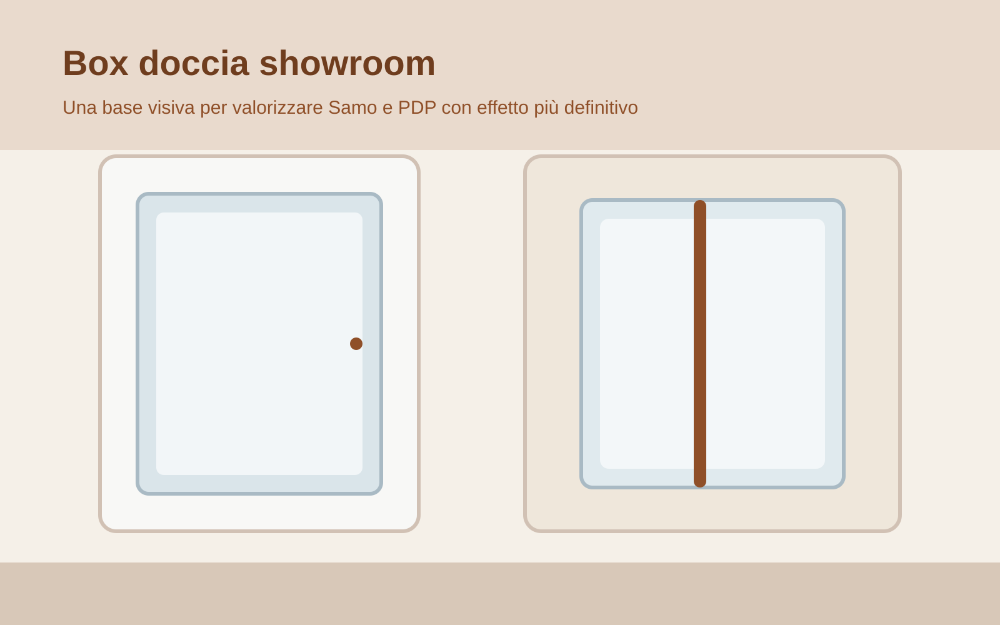

Showroom box doccia · SamoBox doccia Samo
Samo entra come marchio da valorizzare nello showroom bagno: linee pulite, soluzioni per nicchia, angolo e walk-in, con un posizionamento perfetto per chi cerca un risultato elegante ma concreto. In questa fascia possiamo mostrare le soluzioni più riuscite e i modelli che si abbinano meglio ai bagni che vuoi spingere.